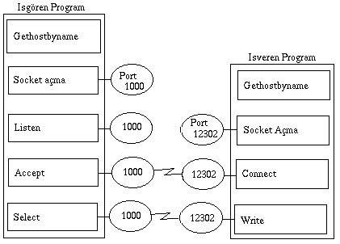

TCP/IP İLE PROGRAMLAMA
TCP/IP iletişimi hakkında kısa bir açıklamayı iletişim bölümünde daha önce anlatmıştım. Ayrıca dileyenler, INTERNET bağlantıları ve bilgisayarlar arasındaki mesaj trafiği hakkında bilgi edinmek için INTERNET ağları konulu dökümanı da inceleyebilirler.
Burada TCP/IP iletişimi için C programlarında nasıl bir yöntem izlendiğine ve programlarda kullanılan komutların özelliklerine değineceğiz. Sonra örnek programlarla bu bilgileri nasıl kullandığımızı göstereceğiz.
KISA ÖN BİLGİ
TCP/IP genelde bir bilgisayar ortamında iki program arasında iletişim kurulması için kullanılan bir protokoldur. Burada programlar İşgören (sunucu) ve İşveren olarak iki ayrı konumda çalışır. Kısaca söylemek gerekirse programlardan biri gelen bilgiyi işleyip diğer programa göndermeyi gerçekleştirirken, bilgiyi alan program, işlenmiş bilgiyi görüntüleri ya da kullanır. Bu kavram bize iki değişik ortamda çalışan programlar yazma olanağı getirir.
Genelde kullanıcıların hepsinde yalnız kullanıcı arayüzü olan programlar çalışırken, merkezde veri tabanı erişimi, yazici paylaşımı ve dış dünya ile bağlantı için gereken programlar bulunur. Kullanıcı bilgilerinin ekrandan alınması sırasında kullanıcı bilgisayarında çalışan program merkezdeki programla bağlantı olmadığından tüm işlem yükü yalnız kullanıcı bilgisayarında kalır. Bu işlemler için merkez bilgisayar bir emek harcamaz. Bilgi tamamlanıp merkeze gönderildiğinde ilgili program, gelen bilgi üzerinde gereken işlemleri yapıp sonuçları kullanıcının bilgisayarına iletir. Aradaki iletişim sürekli değildir. İletişim yalnız mesaj alış verişi sırasında kurulur. Ancak aynı anda birden çok kullanıcı bir merkeze bağlantı kurabildiğinden merkezdeki bilgisayar yüksek işlem gücü ile donatılır. Kullanıcı bilgisayarları ise herkesin kullandığı PC'ler olabilir.
Bazı koşullarda tüm kullanıcılara her işi yapan yetki verilmez. Ancak kullandıkları programın veri tabanına ekler yapması, ya da verilerin bazılarını değiştirmesi gerekebilir. Bu durumda İşgören (Sunucu) tüm yetkilerle ile donatılır ve işveren program gerekli mesajı göndererek işlemin yapılmasını ister. Burada işgören ve işveren programlar aynı bilgisayarda çalışabilir. Örneğin bir java applet ile ekrandan girilen bilginin diske yazılması hakkı bir işgören programa mesaj gönderilerek yapılabilir. Burada java applet, bilgiyi alırken kullanıcının yetkisi olup olmadığını, güvenlik kuralları çerçevesinde kontrol eder (kullanıcı adı ve şifresi almak gibi) ve uygun güvenlik bilgilerini mesajla birlikte işgörene gönderir.
Bu nedenle TCP/IP iletişim programları kullanıcılara işveren ve işgören programlar yazarak uygulama alanlarını genişletme olanağı getirir.
Anlattığım ya da anlatacağım bazı temel kavramlar, TCP/IP hakkında teknik bilgileri içermektedir. Amaç, çeşitli uygulamalarda bu kavramları kullanarak iletişim programları yazılımını kolaylaştırmaktır.
Tanımlanmış IP protokolları
Bu tabloda yer alan IP protokollarının kullanım biçimleri TCP/IP iletişimi için önemlidir. Örneğin, programlarda kullanılan socket açma komutunun son parametresi aşağıdaki IP protokollarından biri olmalıdır.
| IP Protokolları | Değeri | Açıklama |
|---|---|---|
| IPPROTO_IP | 0 | TCP için standart protokol |
| IPPROTO_ICMP | 1 | Internet Kontrol Mesajları Protokolu |
| IPPROTO_IGMP | 2 | Internet Grup Yönetim Protokolu |
| IPPROTO_IPIP | 4 | IPIP tünelleri |
| IPPROTO_TCP | 6 | (TCP) Transmission Control Protocol |
| IPPROTO_EGP | 8 | Başka bir bilgisayardaki eşik protokolu |
| IPPROTO_PUP | 12 | PUP protokolu |
| IPPROTO_UDP | 17 | Kullanıcının tanımladığı Datagram Prtokolu |
| IPPROTO_IDP | 22 | XNS IDP Protokolu |
| IPPROTO_RAW | 255 | Ham IP paketleri |
TCP socket protokolları
TCP socket'lerinde bağlantılı türleri socketin özelliğine göre değişir. TCP iletişiminde iki ana kavram vardır. Biri bağlantılı, diğeri bağlantısız iletişim. Bağlantılı iletişimde socket'ten mesaj bekleyen (listen komutu ile socketi dinleyen) programa bağlantı, connect komutu ile yapılır. Bağlantı sağlandıktan sonra mesaj gönderme ve alma işlemi read ve write komutları ile gerçekleşir. Bağlantılı iletişimde kullanılan socket türü SOCK_STREAM olmalıdır. TCP/IP üzerinden iletişimde, hattın yoğunluğu ve kalitesine bağımlı olarak parçalanan TCP paketleri bu socket türü kullanıldığında alıcı socket altında sıralanır ve birleşirilerek TCP katmanına ulaştırılır. Bu durumda uygulama programı, bir read komutu ile tüm mesajı bir seferde okuyabilir.
Kısa mesajlar SOCK_DGRAM socket üzerinden iletilebilir. Bu tür mesajların parçalanması söz konusu olmadığından yukarıdaki sorun yaşanmaz. Bu tür mesajlarda mesaj boyu 256 byte ya da daha kısa olmalıdır. Ve mesajlar hep aynı uzunlukta olmalıdır. Bağlantısız iletişim ortamında kullanılır. Yani socket dinleyen program accept komutu kullanmaz, sockete bilgi gönderen de connect komutunu kullanmaz. Burada yalnız listen komutu vardır. Programlar karşılıklı "read" ve "write" komutu ile haberleşir. İletişim açısından çok güvenli bir socket haberleşmesi değildir. Daha güvenli ve bağlantılı iletişimde (connected) DATA GRAM mesajları, SOCK_SEQPACKET tipi socket'ler üzerinde iletilmelidir.
Bir bilgisayar içindeki programlar arası iletişim SOCK_RAW tipi socket ile kurulabilir. Bu tür socket'lerde Data Gram tipi mesajlar iletilir.
 TCP/IP İletişim Programları Mantığı
Bir sistemde TCP/IP program geliştirme modülleri varsa, programcının bu modülleri nasıl kullanacağı, kullanılmak istenilen socket türüne göre farklıdır. Eğer bağlantılı ve güvenli iletişimi içeren SOCK_STREAM kullanılıyorsa, yazılacak programın görevine göre iletişim komutları şöyle özetlenebilir :
İşveren (Client) Programı :
Bu program hangi bilgisayar ile bağlantı kuracağını belirledikten sonra socket komutu ile socket açar. Socket açıldıktan sonra ilk iş karşı taraftaki programla bağlantı kurmaktır. Bağlantı connect komutu ile kurulur. Bundan sonra işlem, mesaj gönderme ve cevap alma olarak devam eder. İşlem bittiğinde close komutu ile bağlantı kesilir.
İşgören Programı :
İşgören programı hangi bilgisayara hangi TCP portundan bilgi geleceğini bilmelidir. İşgören program her zaman bir TCP protunu dinler. İşgören programın dinlediği port birden çok IP adresi bulunan bir bilgisayarda bulunabilir. Bu durumda sunucu program yalnız bir bilgisayara gelen mesajları dinleyebilir. İstenirse sunucu program o bilgisayar gelen tüm mesajları da dinleyebilir.
İşgören program once socket komutu ile kullanacağı socket'i açmalıdır. İşgören programın bir porttan gelen mesajları dinlemesi icin bind komutunu başlatmış olması gerekir. listen komutuyla sunucu program, ilgili portu dinleyeceğini söyler. Bundan sonraki adım porttan bağlantı beklemektir. Porttan accept komutu ile bağlantı beklenir.
Porttan bağlantı mesajı geldiğinde sunucu program hemen kendini kopyalamalı, kopyalardan biri bağlantı kuran programla bilgi alış verişine başlarken diğer kopya yeni gelecek bağlantılar için portu dinlemeye devam etmelidir.
Mesaj alış verişi biten kopya bağlantı kapandığında çalışmasına son verir. Port dinleyen program bağlantı talebinin sayısına ve belleğin büyüklüğüne bağımlı olarak aynı anda birden çok kopya üretebilir ve aynı anda birden çok bağlantıya hizmet verebilir.
TCP/IP Komutları
gethostbyname : Bu komut verilen bir bilgisayar adına ilişkin yapı tanımını döndürür. Bu yapı tanımında bilgisayarın adresi ve TCP için kullanılan protokolun tanımı vardır. Bu komut kullanıldığında yazılan program INTRANET ya da INTERNET ortamında sorunsuz çalışır. Çünkü kullanılacak bilgisayar ilişkin yapı sistemdeki diğer programlar ve varsa name server tarafından hazırlanır.
socket : Bu komut iletişim için gerekli uç noktayı programa tanıtmak için kullanılır. Çeşitli socket kavramları aşağıda kısaca acıklanmıştır :
- SOCK_STREAM : Sıralanmış ve iki yönlü bağlantı sonrası kullanılabilecek güvenli byte dizileri için geçerli bir socket türüdür.
- SOCK_DGRAM : Kısa ve Sabit uzunluklu bağlantısız mesaj trafiğine elverişli, datagram tipi, çok güvenli olmayan bir socket türüdür.
- SOCK_RAW : Bir bilgisayar içindeki iletişim için kullanılır. Belitilen (ya da adlandırılmış) send komutları için DATAGRAM göndermekte kullanılır. UNIZ ortamında yalnız super-kullanıcı (root) bu tür socket'leri kullanabilir.
- SOCK_SEQPACKET : Bu tür socket datagram tipi kısa ve değişmez boylu mesajları bağlantıdan sonra kullanmaya yarar. Güvenli iletişim için gereklidir.
bind : Bu komut bir socket'i bir adrese bağlamak için kullanılır. Bu adres
ya yerel bilgisayar adresi, ya da sıfır (0.0.0.0) adresi'dir. Bind komutu
öncesinde socket komutu ile socket tanımlanmış olmalıdır.
listen : Bu komut gelen bağlantıları beklemek ve aynı anda gelen bağlantı
isteklerini kuyruklamak için kullanılır. Bu komutta kaç tane isteğin kuruklanacağı da
belirtilir. Bind komutundan sonra kullanılır.